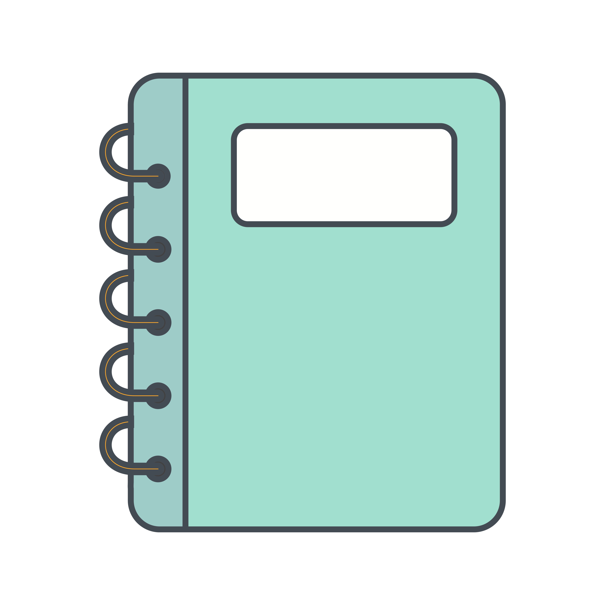

<mat-toolbar style="background: rgb(20, 65, 24);">
  <span>
    <a routerLink="/">
      
    </a>
    
    <a routerLink="/">Save-a-Note</a>
  </span>
  <span class="spacer"></span>
  <ul>
    <li>
      <a mat-button routerLink="/create" routerLinkActive="mat-accent" >New Note</a>
    </li>
  </ul>
</mat-toolbar>
